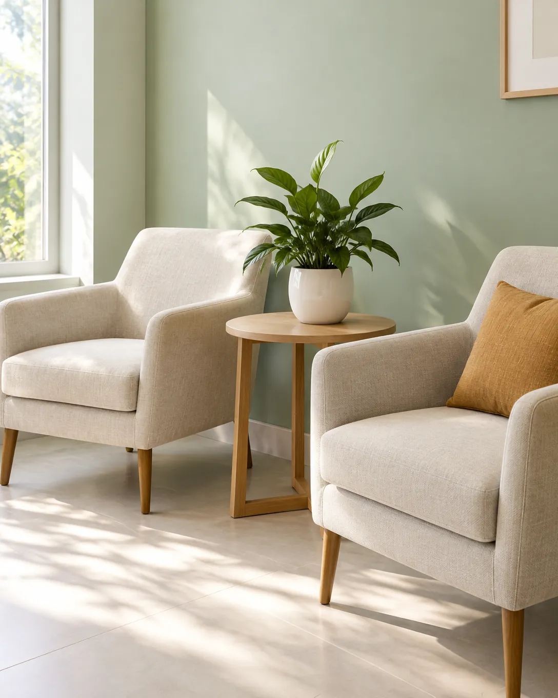
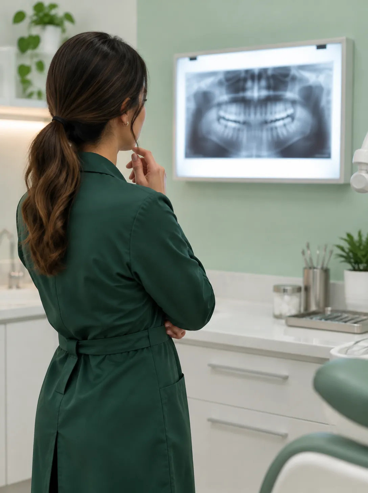
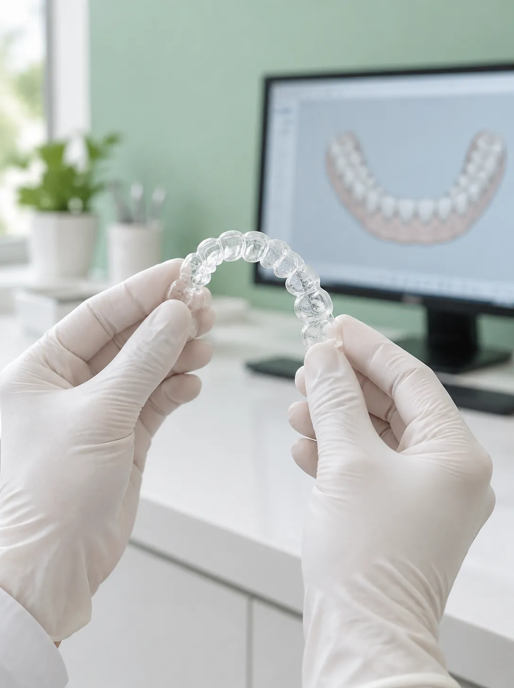
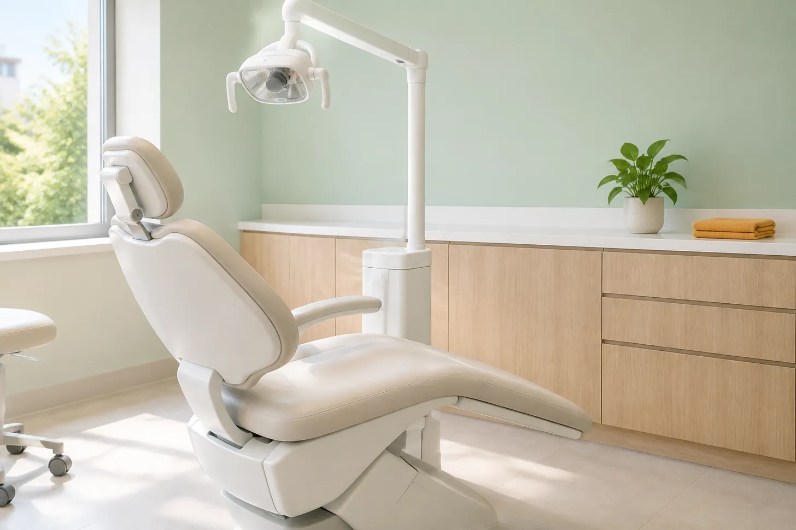

Coroa
A parte que aparece no sorriso. É de cerâmica, na cor dos seus dentes.
Somos um consultório odontológico em Cuiabá. Aqui você vê a faixa de preço, o número de sessões e os horários livres antes de marcar. Sem surpresa na cadeira.
Ver horários livresSimular um tratamento
Avaliação inicial: 40 minutos, com radiografia e plano por escrito.
Substituição de um ou mais dentes com pino de titânio e coroa de cerâmica, em etapas com intervalo para cicatrizar.
A parte que aparece no sorriso. É de cerâmica, na cor dos seus dentes.
A peça do meio. Liga a coroa ao pino e fica escondida sob a gengiva.
Fica no osso, no lugar da raiz do dente. Depois dele vem o intervalo para cicatrizar.
Simular implanteSeis frentes de trabalho. Toque em qualquer uma para simular a faixa de preço.
Exame completo, radiografia, remoção de tártaro e polimento.
Simular limpezaNo consultório, em duas sessões, ou em casa com moldeira feita sob medida. Explicamos a diferença antes de você escolher.
Simular clareamentoPlanejamento digital, placas trocadas a cada duas semanas e consultas curtas de acompanhamento.
Simular alinhadoresAqui você vê a faixa de preço, o número de sessões e os horários livres antes de marcar.
40 minutos, com exame completo e radiografia. A primeira consulta é só conversa e exame, sem procedimento.
Você recebe um plano por escrito com faixa de preço e número de sessões.
Um calendário mostra os dias de atendimento e os horários livres de cada um.
Explicamos tudo antes e combinamos um sinal com a mão para pausar.
[ preço, sessões e horários antes de marcar ]
O simulador desta página mostra a faixa de preço, quantas sessões costumam ser necessárias e o valor aproximado de cada parcela. Sem surpresa na cadeira.
Em até 10 vezes sem juros no cartão.
Simular um tratamentoagenda
Escolha um dia no calendário, depois um horário livre e confirme com seu nome. É uma simulação: nada é enviado e nenhuma consulta é marcada de verdade.

| dom | seg | ter | qua | qui | sex | sáb |
|---|
Atendemos de segunda a sexta, das 8h às 18h, e sábado pela manhã.
Escolha um dia no calendário.
Esta lista fica só no seu navegador (localStorage) e some se você limpar os dados do site.
simulador
Escolha o tratamento e ajuste os detalhes. Mostramos a faixa de preço, quantas sessões costumam ser necessárias e em quanto tempo. Valores fictícios, só para demonstração.
Faixa de preço estimada
de R$ 180 a R$ 260
à vista
Inclui exame, radiografia e polimento.
Marcar avaliaçãoantes e depois
Arraste o controle para comparar. Os sorrisos são desenhos estilizados, não fotos de pacientes.
Clareamento em consultório, duas sessões de 45 minutos com intervalo de uma semana.
consultório
Duas dentistas, uma sala de espera silenciosa e estacionamento na porta. Endereço e nomes são fictícios.

CRO-MT 00000 (fictício)
Clínica geral e estética. Gosta de explicar cada etapa com o espelho na mão.

CRO-MT 00000 (fictício)
Ortodontia e alinhadores. Faz o planejamento digital na sua frente.

Rua das Seriemas, 000, sala 4
Jardim das Américas, Cuiabá, MT
Telefone fictício: (65) 0000-0000
Segunda a sexta, 8h às 18h. Sábado, 8h às 12h.
dúvidas
Toque em uma pergunta para abrir a resposta.
Sim, e o valor é abatido do primeiro tratamento que você fizer conosco. Na avaliação você recebe radiografia, exame completo e um plano por escrito com faixa de preço e número de sessões.
Trabalhamos com reembolso: você paga a consulta, nós emitimos o recibo e a documentação, e você pede o reembolso ao seu plano. Para este site de demonstração, nenhum convênio é real.
Feito com supervisão, não. Pode haver sensibilidade por alguns dias, que tratamos com gel dessensibilizante. Não indicamos clareamento em gestantes, menores de 16 anos ou dentes com cárie aberta.
Com tempo. A primeira consulta é só conversa e exame, sem procedimento. Explicamos tudo antes, combinamos um sinal com a mão para pausar e usamos anestesia em gel antes da agulha.
Casos leves, de 6 a 8 meses. Casos moderados, de 10 a 14 meses. Casos complexos podem passar de 18 meses. O planejamento digital mostra a previsão antes de você decidir.
Sim, em até 10 vezes sem juros no cartão. O simulador desta página mostra o valor aproximado de cada parcela.
como funciona
Esta página é uma demonstração da Mil e Uma Linhas!. Abaixo explicamos o que ela faz, em três níveis.
É um site de consultório que funciona de verdade: você escolhe um dia e um horário, simula quanto custa um tratamento e compara um sorriso antes e depois. Tudo acontece na sua tela. Nada é enviado para ninguém e nenhuma consulta é marcada. Os nomes, os preços e o endereço são inventados.
O site é feito de três tipos de arquivo: texto e estrutura (HTML), aparência (CSS) e comportamento (JavaScript). Quando você abre a página, o navegador lê todos e monta tudo sozinho. O implante do início é desenhado em 3D na hora, no seu aparelho, e se move conforme você rola a página. O calendário é gerado na hora com a data do seu aparelho. Os horários "ocupados" são sorteados de um jeito fixo para cada dia, então o mesmo dia mostra sempre os mesmos horários. O simulador faz contas simples com uma tabela de valores. Se você confirmar um horário, ele fica guardado só na memória do seu navegador.
js/app.js). O início em 3D usa three.js, GSAP e Lenis, e os títulos animados usam React com spring-text-engine; tudo compilado e servido pelo próprio site, sem CDN e sem analytics.Content-Security-Policy por meta: default-src 'self', sem script inline, sem estilo inline, connect-src 'none', form-action 'none'.fonts/ (woff2, subconjunto latino), licença SIL OFL.Date no fuso do visitante; disponibilidade pseudoaleatória determinística por hash da data (função simples de 32 bits).clip-path: inset() controlado por uma variável CSS que o input type="range" atualiza; o mesmo controle serve mouse, toque e teclado.localStorage, chave nascente.agendamentos, só depois de o visitante confirmar um horário.tests/site.cjs com Playwright: 1280x900, iPhone 13 e 320 px, verificando console, rolagem horizontal e textos cortados.